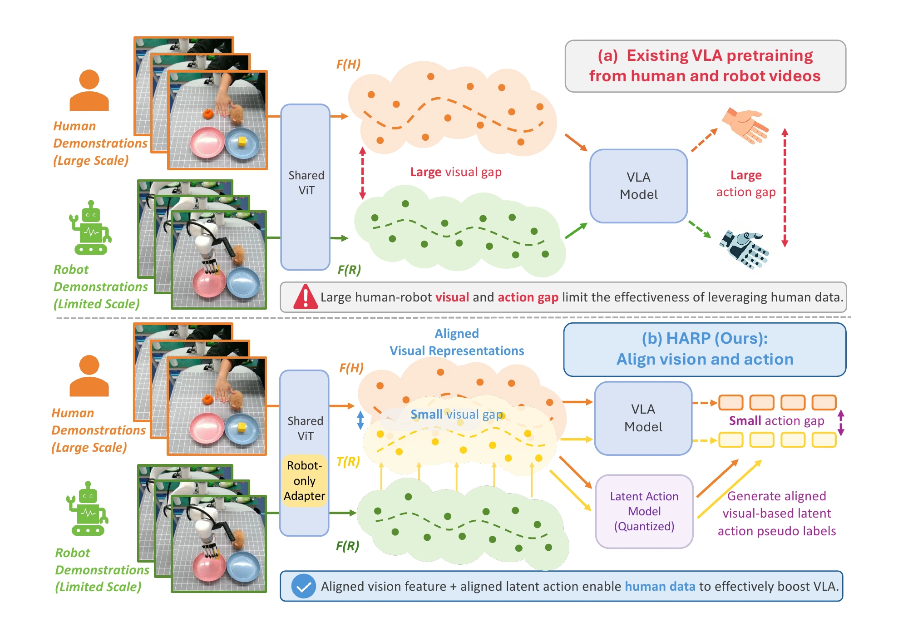
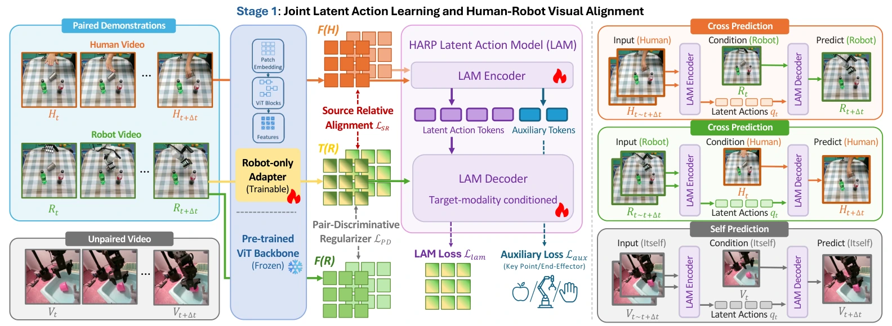
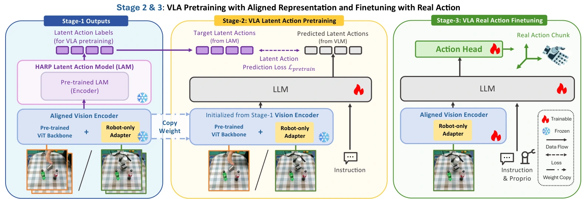
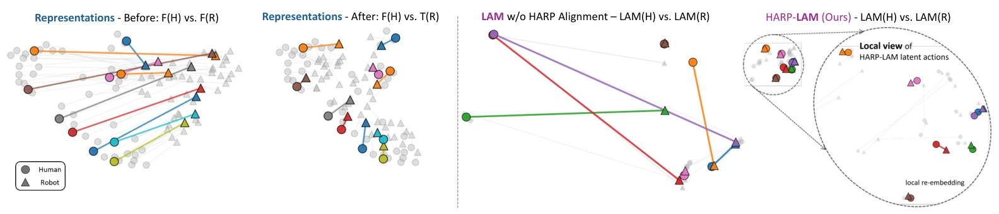
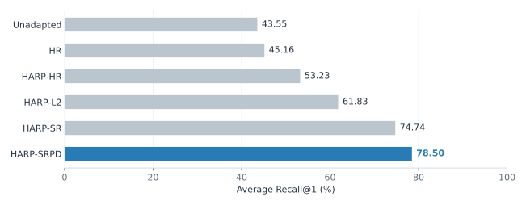
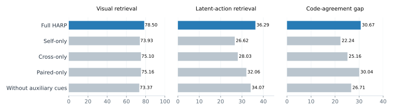
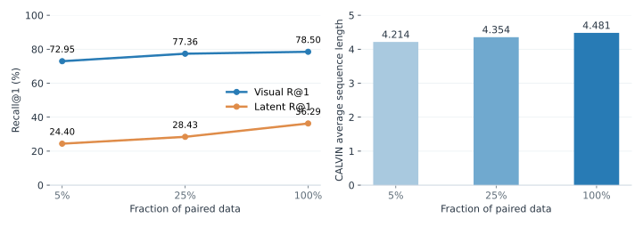
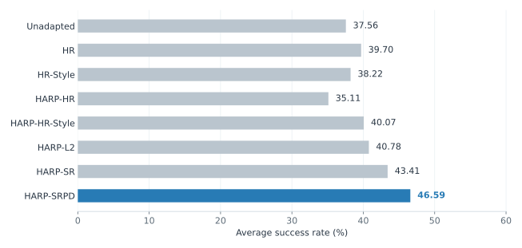
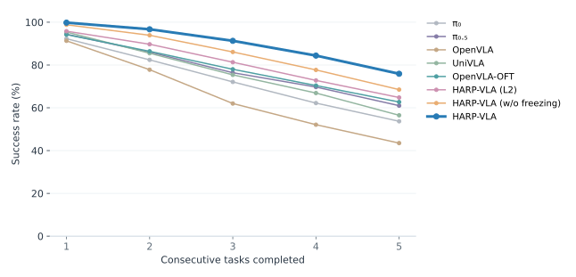
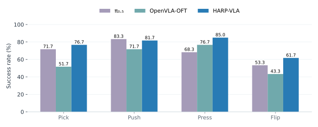

HARP-VLAHuman-Robot Aligned Representation Learning
for Vision-Language-Action Model
1 Institute for Interdisciplinary Information Sciences, Tsinghua University
2 Shanghai Qi Zhi Institute
* Equal contribution † Corresponding author
Align vision and action in the feature space. Better learn from human videos.

Abstract
Human videos offer a rich source of manipulation knowledge, but visual and action differences make that knowledge difficult to transfer to robots. HARP jointly aligns human–robot visual representations and latent actions. A lightweight robot-only adapter anchors robot features to human semantics, while self- and cross-prediction learn shared motion representations from paired and unpaired videos. Manipulation-centric auxiliary cues and a source-relative pair-discriminative objective improve alignment while preserving distinctions between demonstrations. The aligned encoder and latent action model then supervise VLA pretraining, followed by a lightweight action head for robot control.
Experiments show stronger cross-embodiment alignment and downstream manipulation performance, reaching 4.481 average sequence length on CALVIN ABC→D and 76.3% real-world success—a 7.1 percentage-point improvement over the strongest evaluated baseline.
Method Overview
01 / Method
A shared representation for humans and robots
A three-stage framework connects cross-embodiment alignment to executable robot actions.
Align
Jointly learn aligned visual representations and latent actions.
Pretrain
Learn a policy from aligned latent-action supervision.
Finetune
Ground the policy in continuous robot action chunks.
Stage 1 · Joint visual and latent-action alignment

Stages 2 & 3 · From aligned representations to robot actions

02 / Representation analysis
Closer across embodiments. Distinct across tasks.
Alignment is measured on the same held-out paired demonstrations, with identical sampling, pooling and similarity metrics.

Cross-embodiment retrieval
Average Recall@1 rises from 43.55% to 78.50%. HARP improves both geometric alignment and discrimination between paired demonstrations.

View full results · Table 1 · Bidirectional retrieval
| Method | Human → robot | Robot → human | Average R@1 |
|---|---|---|---|
| Unadapted | 44.09 | 43.01 | 43.55 |
| HR | 45.16 | 45.16 | 45.16 |
| HARP-HR | 46.24 | 60.22 | 53.23 |
| HARP-L2 | 70.97 | 52.69 | 61.83 |
| HARP-SR | 84.95 | 64.52 | 74.74 |
| HARP-SRPD | 87.10 | 69.89 | 78.50 |
03 / Ablations & scaling
Complementary signals make alignment stronger
Self-prediction, cross-prediction, unpaired videos and manipulation-centric auxiliary cues each contribute to the learned representation.

View full results · Table 2 · Component ablations
| Variant | Visual R@1 | Latent R@1 | Code-agreement gap |
|---|---|---|---|
| Full HARP | 78.50 | 36.29 | 30.67 |
| Self-only | 73.93 | 26.62 | 22.24 |
| Cross-only | 75.10 | 28.03 | 25.16 |
| Paired-only | 75.16 | 32.06 | 30.04 |
| Without auxiliary cues | 73.37 | 34.07 | 26.71 |
Strong performance with less paired supervision
With 5% of the paired data, HARP retains 72.95% visual Recall@1 and a CALVIN average length of 4.214. Unpaired data and optimization budget are held fixed.

View full results · Table 3 · Paired-data scaling
| Paired data | Visual R@1 | Latent R@1 | RLBench | CALVIN |
|---|---|---|---|---|
| 100% (~24M frames) | 78.50 | 36.29 | 46.59 | 4.481 |
| 25% (~6M frames) | 77.36 | 28.43 | 42.10 | 4.354 |
| 5% (~1.2M frames) | 72.95 | 24.40 | 40.70 | 4.214 |
04 / Visual representation transfer
Better features for robot policy learning
With frozen visual encoders and a shared downstream policy setup, HARP-SRPD achieves 46.59% average success across 18 RLBench tasks, compared with 37.56% for the unadapted encoder.

View full results · Table 4 · Frozen-encoder RLBench results
| Method | Success rate (%) |
|---|---|
| Unadapted | 37.56 |
| HR | 39.70 |
| HR-Style | 38.22 |
| HARP-HR | 35.11 |
| HARP-HR-Style | 40.07 |
| HARP-L2 | 40.78 |
| HARP-SR | 43.41 |
| HARP-SRPD | 46.59 |
05 / Policy evaluation
CALVIN · Generalization across environments
Long-horizon manipulation in the ABC→D setting.

View full results · Table 6 · CALVIN ABC→D
| Model | 1 task | 2 tasks | 3 tasks | 4 tasks | 5 tasks | Average length |
|---|---|---|---|---|---|---|
| π₀ | 92.3 | 82.4 | 72.1 | 62.2 | 53.7 | 3.627 |
| π₀.₅ | 94.4 | 86.0 | 76.4 | 69.7 | 61.0 | 3.875 |
| OpenVLA | 91.3 | 77.8 | 62.0 | 52.1 | 43.5 | 3.270 |
| UniVLA | 95.4 | 85.5 | 75.4 | 66.9 | 56.5 | 3.800 |
| OpenVLA-OFT | 94.2 | 86.4 | 78.0 | 70.4 | 62.7 | 3.917 |
| HARP-VLA (L2) | 95.8 | 89.7 | 81.3 | 72.8 | 64.8 | 4.044 |
| HARP-VLA (w/o freezing) | 98.8 | 93.9 | 86.1 | 77.7 | 68.5 | 4.250 |
| HARP-VLA | 99.8 | 96.7 | 91.3 | 84.4 | 75.9 | 4.481 |
Five sequences, five steps each
Read each row from left to right: five consecutive successful subtasks in each recorded sequence.
Swipe to view all five steps →
Representative recorded rollouts. The gallery is separate from the aggregate benchmark evaluation.
06 / Real-world manipulation
From human videos to dexterous robot skills
Xarm7 with a Robotera Xhand, evaluated on four tabletop manipulation tasks with 60 trials per task.

View full results · Table 5 · Real-world success rates (%)
| Model | Pick | Push | Press | Flip | Average |
|---|---|---|---|---|---|
| π₀ | 58.3 | 75.0 | 56.7 | 35.0 | 56.3 |
| π₀.₅ | 71.7 | 83.3 | 68.3 | 53.3 | 69.2 |
| OpenVLA | 0.0 | 23.3 | 18.3 | 0.0 | 10.4 |
| UniVLA | 38.3 | 61.7 | 31.7 | 21.7 | 38.4 |
| OpenVLA-OFT | 51.7 | 71.7 | 76.7 | 43.3 | 60.9 |
| HARP-VLA (L2) | 70.0 | 71.7 | 81.7 | 56.7 | 70.0 |
| HARP-VLA (w/o freezing) | 76.7 | 80.0 | 78.3 | 58.3 | 73.3 |
| HARP-VLA | 76.7 | 81.7 | 85.0 | 61.7 | 76.3 |
Backbones, pretraining data and visual inputs differ across systems; these are system-level comparisons.
Real-world demonstrations
Three demonstrations per task. Switch between synchronized third-person and wrist-camera views.
Pick and Place
Push Box
Press Button
Flip Cup
Looking ahead
HARP shows how a small paired bridge, combined with unpaired video dynamics, can improve learning from human demonstrations. Current limitations include the cost of paired data, sensitivity to trajectory tracking and viewpoint differences, and evaluation on a single real-world tabletop platform. Future directions include more embodiments, longer-horizon tasks and bimanual manipulation.
Citation
@article{zhu2026harp,
title={HARP-VLA: Human-Robot Aligned Representation Learning for Vision-Language-Action Model},
author={Zhu, Xiang and Yuan, Puzhen and Liu, Yichen and Chen, Jianyu},
journal={arXiv preprint arXiv:2605.31234},
year={2026}
}